De multiplayer van Modern Warfare heeft verschillende gamemodes die je kan spelen.
Als je de multiplayer open zie je links een menu staan waar alle gamemodes instaan, op deze pagina behandelen we alle gamemodes die er zijn.
In elk van deze gamemodes heb je verschillende objectives: het doel van de gamemode.
Die staan ook uitgelegt bij alle gamemodes.
Ook kan je zo'n beetje alle gamemodes spelen in hardcore, dit houd in dat de minimap uitstaat en jouw hp verlaagd is waardoor elk wapen ongeveer gelijk is aan elkaar.
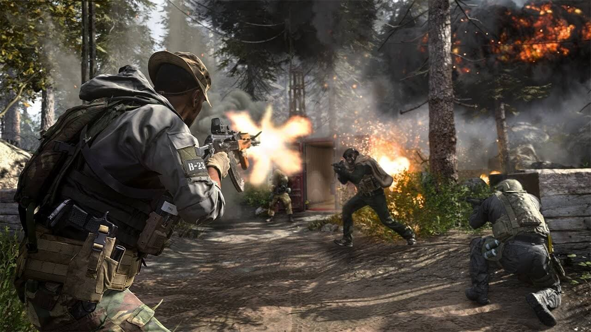
Team Deathmatch
Dit is de meest bekende gamemode.
In deze gamemode speel je met 2 teams tegen elkaar met als objective om met jouw team als eerste 200 kills te halen, of om de meeste kills te halen als de timer om is.
Als je doodgaat respawn je onmiddelijk en de timer staat meestal rond de 10 minuten.
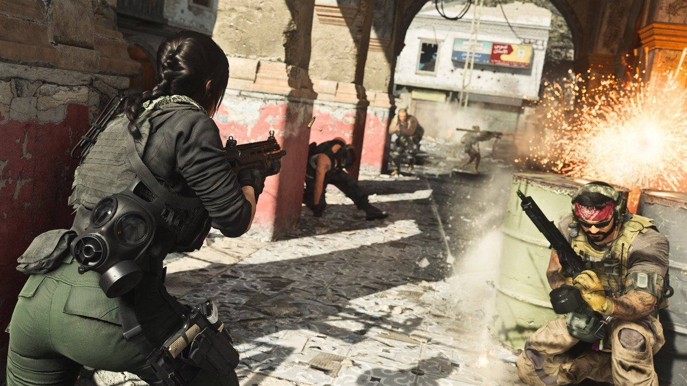
Free For All
Deze gamemode is hetzelfde als team deathmatch alleen in plaats van dat je in 2 teams zit speelt nu iedereen voor zich.
Het aantal kills om te winnen is ook wat minder (normaal gesproken 50) maar de timer blijft wel hetzelfde.
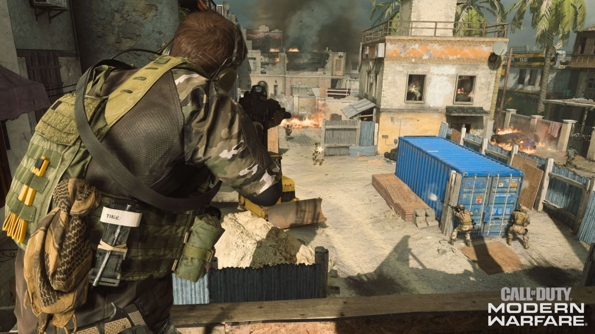
Headquarters
Headquarters is een best ingewikkelde gamemode.
Er zijn 2 teams die strijden om de HQ, die spawnd willekeurig om de 2 minuten over de map.
Net als bij domination moet je de HQ capturen door er op te staan en als je met jouw team de HQ gecaptured hebt, gaat respawn voor jouw team uit tot hij weer verder ropteerd op een andere plek.
Als je de HQ in handen hebt moet je hem verdedigen want elke seconde dat je hem in handen hebt krijg je punten, het team met de meeste punten wint de game.
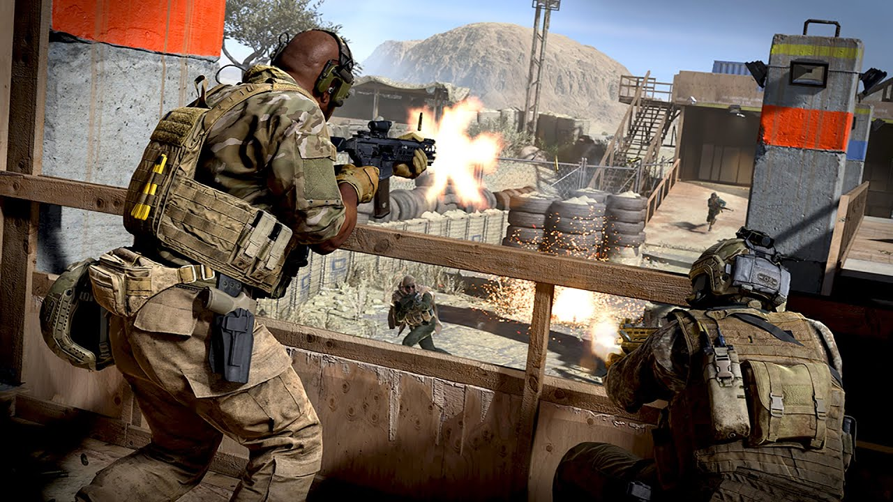
Gunfight
Deze gamemode is geïntroduceerd in Modern Warfare.
In gunfight speel je dus 2 tegen 2 in rondes, er zijn in totaal 11 rondes dus wie het eerste 6 wint, wint het spel.
Om de 2 rondes krijg je een willekeurig wapen uit de game, iedereen heeft dan die 2 rondes hetzelfde wapen.
In 1 ronde kan je niet respawnen en health generation staat uit, dus iedereen heeft aan het begin van een ronde 100 hp en als je dan bijvoorbeeld voor 20 hp geraakt word krijg je die er niet meer bij tot de volgende ronde.
Gunfight kan in 1v1, 2v2 of 3v3 en kan alleen op de gunfight maps gespeeld worden.
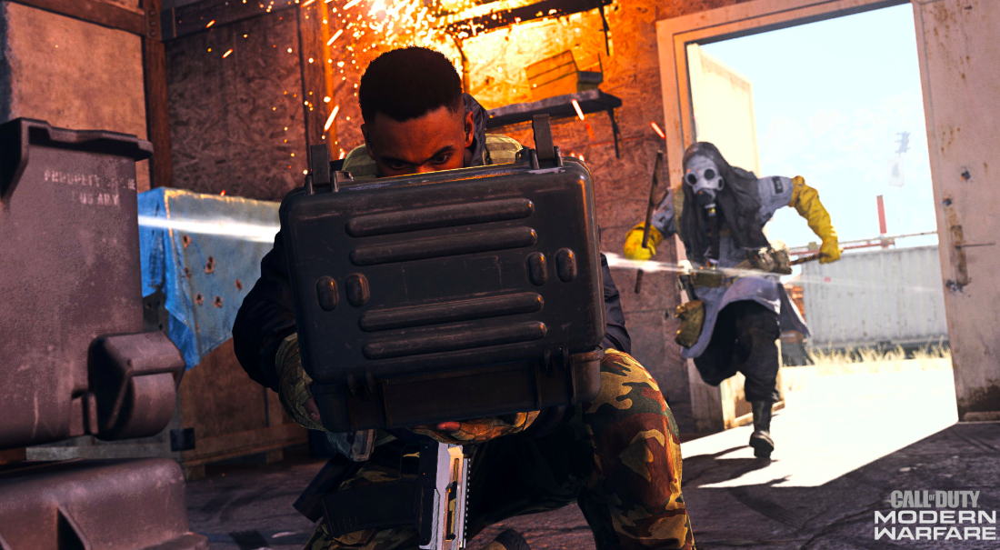
Search & Destroy
Search & Destroy is een andere gamemode die gespeeld word in rondes.
Er zijn 2 partijen die om de 2 rondes switchen.
1 team moet en bom plaatsen op een bepaalde plaats in de map (meestal het midden) die na 1 minuut afgaat, het andere team moet de bom defusen voordat hij ontploft om te winnen.
Het een ronde kan gewonnen worden door de aanvallende partij door de bom te laten ontploffen of het andere team te verslaan, respawn staat namelijk niet aan in een ronde.
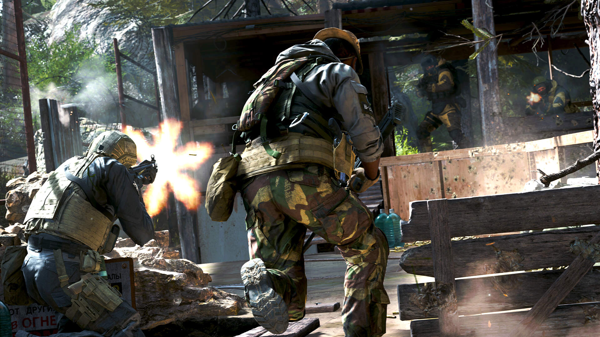
Cranked
Cranked kan in een team deathmatch vorm of in een free for all vorm.
Als je in deze gamemode een kill haalt, start er een timer bovenin jouw scherm van 30 seconden en als de timer afloopt ontplof je.
Ook krijg je tijdens de timer een snelheidsboost en als je een kill haalt regenerate jouw health.
De timer reset pas als je een nog een kill haalt dus deze gamemode dwingt je om agressief te spelen en daarom is het een erg geliefde gamemode.
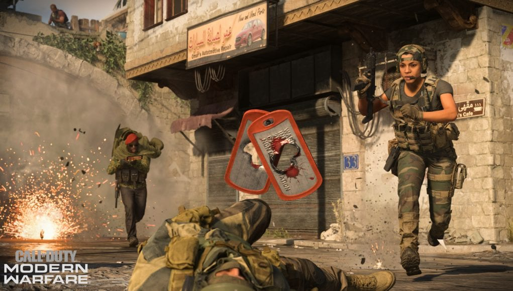
Kill Confirmed
Deze gamemode is best simpel, er zijn 2 teams met dezelfde regels als team deathmatch alleen als je een kill haalt krijg je geen punt.
Als je iemand killt in deze gamemode dropt dat persson een dogtag, als je die opraapt door erop te staan krijg je een punt.
Je kan ook de dogtags van jouw dode teammates oprapen zodat de enemie ze niet meer kunnen oprapen, alleen krijgt jouw team er dan geen punt bij, de tag raakt als het ware dan vervallen.
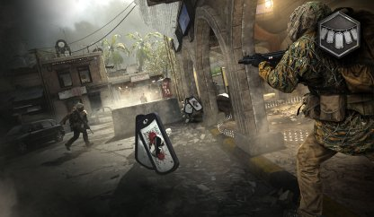
Grind
Grind is een mix van Hardpoint en Kill Confirmed: als je een enemie killt, dropt hij een dogtag.
Jij moet dan de dogtag oppakken en brengen naar een van de banken in de map, normaal gesproken zijn dat er drie.
Het team die de meeste dogtags depost in de banken, wint het spel.
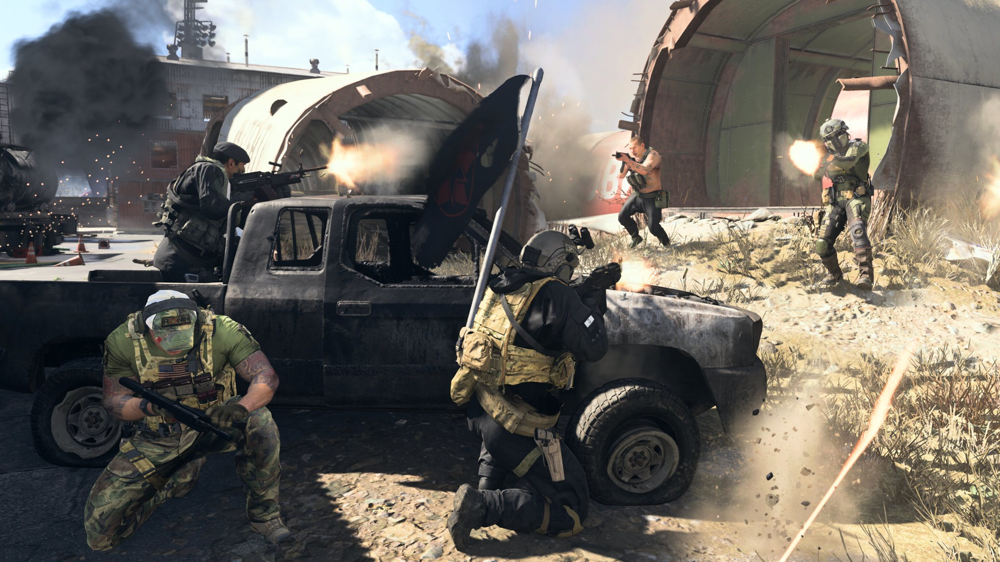
Team Defender
Team defender lijkt een beetje op de klassieke versie van capture the flag.
Er is in deze gamemode 1 vlag die aan het begin van een potje in het midden van de map spawnd.
Als je deze vlag oppakt krijg je narmate je hem vasthoud punten, het team wat de meeste punten heeft wint.
Je dropt de vlag op het moment dat je gekilld word, dus je kan als verdediger in deze gamemode helaas niet erg agressief spelen.

Domination
Domination is ook een klassieke gamemode die in 2 teams gespeeld word.
In deze gamemodes zijn er 3 vlaggen (A,B en C) verspreid over de map, 1 aan de linker kant, 1 in het midden en 1 aan de rechter kant.
Als je een vlag captured (door op de vlag te staan voor 10 seconden) word hij de kleur van jouw team en krijg je voor elke paar seconde dat hij jouw kleur is een punt, het doel is om als eerste de 200 punten te halen dus deze potjes duren meestal wat langer.
De enemie kan jouw vlag capturen door hetzelfde te doen: er op te staan voor 10 seconden, als jouw team dus 2 vlaggen heeft krijgen jullie 2x zoveel punten en als je er 3 hebt krijgen jullie 3 keer zoveel punten.
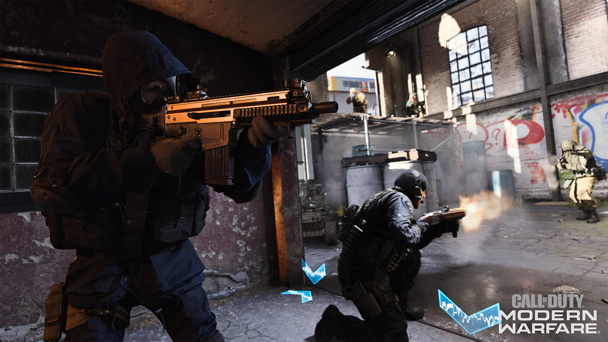
Hardpoint
Hardpoint lijkt een beetje op domination, er is alleen 1 vlag die je moet vasthouden en die vlag roteert om de minuut naar een willekeurig punt op de map.
Er zijn weer 2 teams met als doel om de meeste punten te halen door op de vlag te staan.
Hardpoint is erg geliefd omdat je constant in beweging moet zijn om de vlag te behouden, en daardoor een agressieve speelstijl moet gebruiken.
In call of duty: Vanguard, hebben ze hardpoint alleen dan in plaats van dat hij willekeurig roteert, beweegt hij langzaam over de map in een vast tempo waardoor je overal op de map komt.
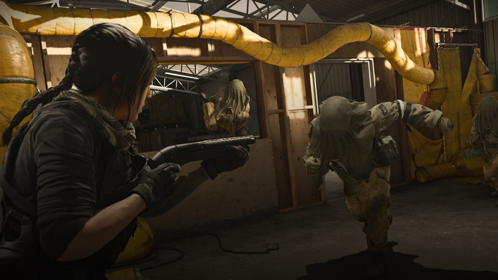
Infected
Nu zijn we aangekomen bij wat ik de "fun" gamemodes noem.
Een potje infected word gespeeld op de 6v6 maps en iedereen begint in hetzelfde team met dezelfde wapens.
Iedereen heeft 20 seconden om een goede (verstop) plaats te zoeken en na de 20 seconden word 1 iemand willekeurig infected, dit persoon krijgt in plaat van de wapens die dat peroon al had, een combat knife en een throwing knife met als doel om de rest van de lobby te infecten.
Als je als surviver gekilld word door een infected peroon, word jij ook infected, infected spelers kunnen respawnen.
Een potje eindigd als de hele lobby infected is of als de survivers overleven tot de timer op is.
Infected kan in de nacht gespeeld worden en deze gamemode kan ook op een groundwar map gespeeld worden met dan tot wel 100 spelers, dan heet de gamemode reinfected groundwar.
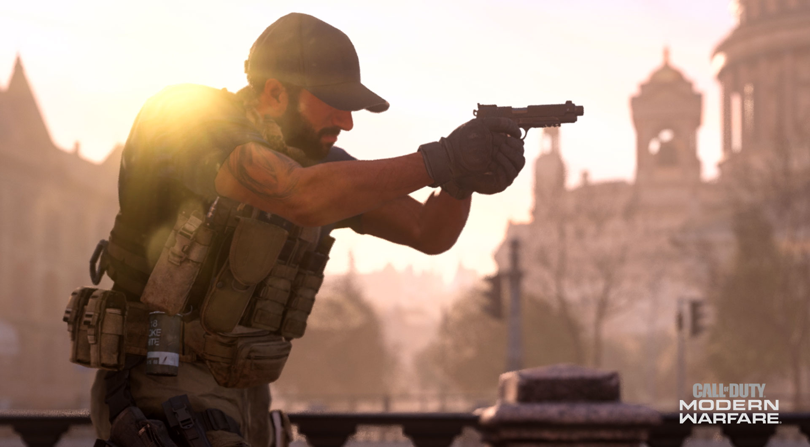
Gun Game
Gun game is een fan favorite gamemode die geïntroduceerd werd in black ops 1.
In de gamemode is een lijst gecreërd met wapens die voor iedereen hetzelfde zijn: je hebt 20 wapens en start met de pistols, dan de assault rifles, smg's, shotguns, snipers en als laatste een throwing knife.
De verschillende soorten wapens in de classes verschillen per potje maar de volgorde blijft hetzelfde.
Telkens als je een kill haalt ga je 1 wapen omhoog totdat je met het laatste wapen een kill haalt, dan heb je gewonnen.
Je hebt dus echt skills nodig om met lastige wapens als snipers en pistols kills te kunnen halen om te winnen, daarom is deze gamemode ook erg geliefd.